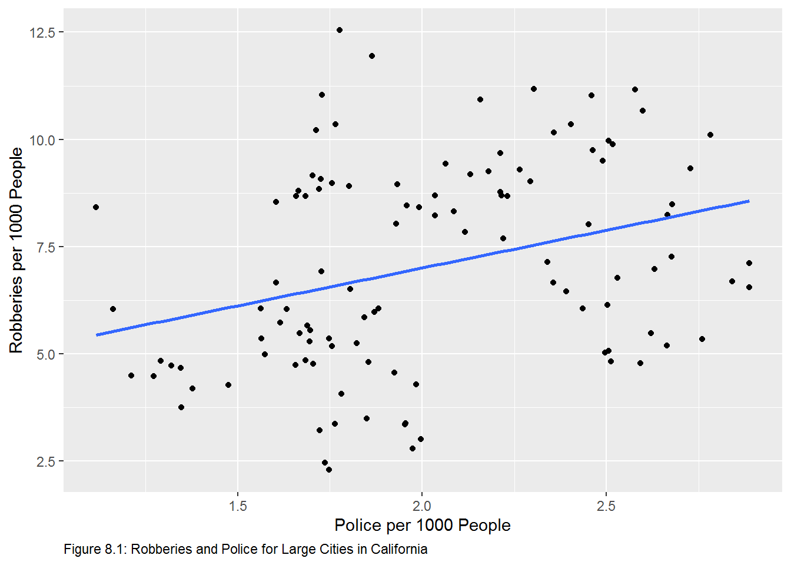
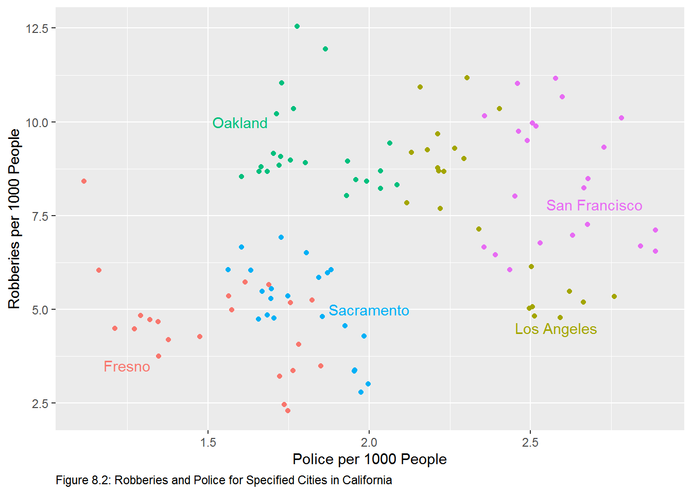
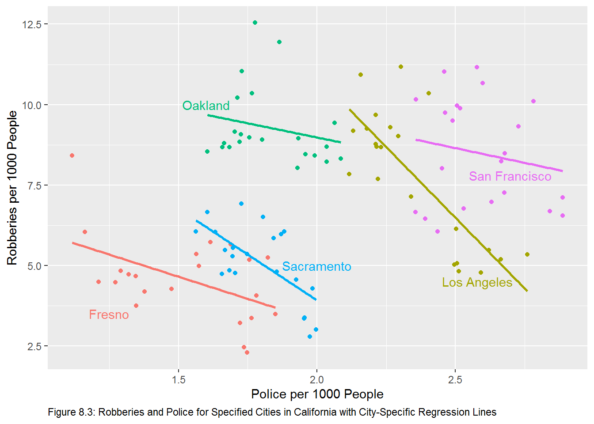

Chapter 10 Using Fixed Effects Models to Fight Endogeneity in Panel Data and Difference–in–Difference Models
In this chapter we will learn to deal with panel data in R. Panel data are data that include observations in and through time. Panel data combine aspects of cross–sectional data with time–series data. The libraries necessary for this chapter are:
10.1 Simpson’s Paradox
Simpson’s paradox - Simpson (1951) is phenomenon where an apparent relationship between two variables reverses itself when the data are dis-aggregated. For example, let’s look at the admissions rate for men and women in the University of California at Berkeley admissions data.
UCBAdmissions is a cross-tabulation of 4526 applicants by 3 variables: Admit, Gender, and Dept, the number of observations for each is n stored as 3-dimensional array.
, , Dept = A
Gender
Admit Male Female
Admitted 512 89
Rejected 313 19
, , Dept = B
Gender
Admit Male Female
Admitted 353 17
Rejected 207 8
, , Dept = C
Gender
Admit Male Female
Admitted 120 202
Rejected 205 391
, , Dept = D
Gender
Admit Male Female
Admitted 138 131
Rejected 279 244
, , Dept = E
Gender
Admit Male Female
Admitted 53 94
Rejected 138 299
, , Dept = F
Gender
Admit Male Female
Admitted 22 24
Rejected 351 317To calculate admission rates, we need to create a new variable, apps, that is the sum of admitted and rejected apps for both men and women.
UCBAdmissions %>%
as_tibble() %>% # convert the table to a data frame
group_by(Dept, Gender) %>% # allows us to sum admitted and rejected by department
mutate(apps = sum(n)) %>% # create number of applicants by department
ungroup() %>% # return the full data frame
filter(Admit == "Admitted") %>% # select only those applicants admitted
group_by(Gender) %>% # allows us to calculate acceptance rates by gender
summarize(rate = sum(n)/sum(apps))# A tibble: 2 x 2
Gender rate
<chr> <dbl>
1 Female 0.304
2 Male 0.445Males are accepted at rate of 44.5% while females are accepted at lower rate of 30.4%.
UCBAdmissions %>%
as_tibble() %>%
group_by(Dept, Gender) %>%
mutate(apps = sum(n)) %>%
ungroup() %>%
filter(Admit == "Admitted") %>%
group_by(Dept, Gender) %>%
summarize(n/apps)# A tibble: 12 x 3
# Groups: Dept [6]
Dept Gender `n/apps`
<chr> <chr> <dbl>
1 A Female 0.824
2 A Male 0.621
3 B Female 0.68
4 B Male 0.630
5 C Female 0.341
6 C Male 0.369
7 D Female 0.349
8 D Male 0.331
9 E Female 0.239
10 E Male 0.277
11 F Female 0.0704
12 F Male 0.0590We now see that females are admitted at higher rates to four of the six departments.
10.2 Figures 8.1-8.3
We see a similar effect in Figures 8.1-8.3 in the text. We can reproduce those graphs with the code below. The crime data set contains observations on 19 variables from 58 cities over the period 1972 to 1993. First choose observations for only the California cities of Fresno, Los Angeles, Oakland, Sacramento, and San Francisco. Next convert the robbery and police to numbers per 1000 persons. The data frame crime contains the data.# the %in% operator means match the elements in one vector with elements in another.
crime %>%
select(cityname, policesworn, robbery, popcity) %>% # choose relevant variables
filter(cityname %in% c("fresno", "losangel", "oakland", "sacramen", "sanfran")) %>% # choose relevant cities
mutate(robbery=robbery/popcity*1000, policesworn = policesworn/popcity*1000) %>% # convert to per 1000
ggplot(aes(x = policesworn, y = robbery)) +
geom_point(na.rm = T) +
geom_smooth(method = lm, na.rm = T, se = F) +
xlab("Police per 1000 People") +
ylab("Robberies per 1000 People") +
labs(caption = "Figure 8.1: Robberies and Police for Large Cities in California") + # create caption
theme(plot.caption = element_text(hjust = 0)) # left justify the caption
crime %>%
select(cityname, policesworn, robbery, popcity) %>%
filter(cityname %in% c("fresno", "losangel", "oakland", "sacramen", "sanfran")) %>%
mutate(robbery=robbery/popcity*1000, policesworn = policesworn/popcity*1000) %>%
ggplot(aes(x = policesworn, y = robbery, color = cityname)) +
geom_point(na.rm = T) +
xlab("Police per 1000 People") +
ylab("Robberies per 1000 People") +
labs(caption = "Figure 8.2: Robberies and Police for Specified Cities in California") +
theme(plot.caption = element_text(hjust = 0), legend.position = "none") + # remove legend
# place city names with corresponding colors.
annotate(geom = "text", x = 1.6, y = 10, label = "Oakland", col = "#00BF7D") +
annotate(geom = "text", x = 2, y = 5, label = "Sacramento", col = "#00B0F6") +
annotate(geom = "text", x = 2.58, y = 4.5, label = "Los Angeles", col = "#A3A500") +
annotate(geom = "text", x = 2.7, y = 7.8, label = "San Francisco", col = "#E76BF3") +
annotate(geom = "text", x = 1.25, y = 3.5, label = "Fresno", col = "#F8766D")
crime %>%
select(cityname, policesworn, robbery, popcity) %>%
filter(cityname %in% c("fresno", "losangel", "oakland", "sacramen", "sanfran")) %>%
mutate(robbery=robbery/popcity*1000, policesworn = policesworn/popcity*1000) %>%
ggplot(aes(x = policesworn, y = robbery, color = cityname)) +
geom_point(na.rm = T) +
xlab("Police per 1000 People") +
ylab("Robberies per 1000 People") +
labs(caption = "Figure 8.3: Robberies and Police for Specified Cities in California with City-Specific Regression Lines") +
theme(plot.caption = element_text(hjust = 0), legend.position = "none") +
annotate(geom = "text", x = 1.6, y = 10, label = "Oakland", col = "#00BF7D") +
annotate(geom = "text", x = 2, y = 5, label = "Sacramento", col = "#00B0F6") +
annotate(geom = "text", x = 2.58, y = 4.5, label = "Los Angeles", col = "#A3A500") +
annotate(geom = "text", x = 2.7, y = 7.8, label = "San Francisco", col = "#E76BF3") +
annotate(geom = "text", x = 1.25, y = 3.5, label = "Fresno", col = "#F8766D") +
geom_smooth(method = "lm", se = F) # add regression lines. the addition of the color aesthetic will cause geom_smooth to add regression lines for each "color"
10.3 One-Way Fixed Effects Models
10.3.1 LSDV Approach
The least squares dummy variable approach allows us to account for the fixed effects by including a dummy variable for each unit. First, let’s calculate the pooled model.
crime %>%
select(cityname, policesworn, robbery, popcity) %>%
filter(cityname %in% c("fresno", "losangel", "oakland", "sacramen", "sanfran")) %>%
mutate(robbery=robbery/popcity*1000, policesworn = policesworn/popcity*1000) %$%
lm(robbery ~ policesworn) %>%
tidy()# A tibble: 2 x 5
term estimate std.error statistic p.value
<chr> <dbl> <dbl> <dbl> <dbl>
1 (Intercept) 3.48 1.05 3.31 0.00129
2 policesworn 1.76 0.509 3.46 0.000771We can see that the coefficient on the police variable is positive and significantly different than zero.
To apply LSDV approach in R, we add cityname as an explanatory variable. Since cityname is a character vector, R will treat it as a factor.
crime %>%
select(cityname, policesworn, robbery, popcity) %>%
filter(cityname %in% c("fresno", "losangel", "oakland", "sacramen", "sanfran")) %>%
mutate(robbery=robbery/popcity*1000, policesworn = policesworn/popcity*1000) %$%
lm(robbery ~ policesworn + cityname)
Call:
lm(formula = robbery ~ policesworn + cityname)
Coefficients:
(Intercept) policesworn citynamelosangel citynameoakland
10.93 -4.16 6.60 5.96
citynamesacramen citynamesanfran
1.63 8.32 We can confirm that below.
crime %>%
select(cityname, policesworn, robbery, popcity) %>%
filter(cityname %in% c("fresno", "losangel", "oakland", "sacramen", "sanfran")) %>%
mutate(robbery=robbery/popcity*1000,
policesworn = policesworn/popcity*1000,
cityname = as_factor(cityname)) %$% # coerce cityname to a factor
lm(robbery ~ policesworn + cityname)
Call:
lm(formula = robbery ~ policesworn + cityname)
Coefficients:
(Intercept) policesworn citynamelosangel citynameoakland
10.93 -4.16 6.60 5.96
citynamesacramen citynamesanfran
1.63 8.32 The equation for each city is: \[\text{Fresno: }Robbery = 8.79-2.75Police\] \[\text{Los Angeles: }Robbery = 17.53-2.75Police\] \[\text{Oakland: }Robbery = 16.89-2.75Police\] \[\text{Sacramento: }Robbery = 12.56-2.75Police\] \[\text{San Francisco: }Robbery = 19.25-2.75Police\] We see the effect of Simpson’s Paradox in the slope variable here. The slope variable is now negative and significant. It should be noted that these results are not consistent with Figure 8.3. Here we have only one slope coefficient with five different intercepts; Figure 8.3 shows five different slope coefficients along with five different intercepts. We can return results consistent with Figure 8.3 as below. We can show the equation for each of the five cities by adding the coefficient on the dummy variable to the intercept with the base case being Fresno6
crime %>%
select(cityname, policesworn, robbery, popcity) %>%
filter(cityname %in% c("fresno", "losangel", "oakland", "sacramen", "sanfran")) %>%
mutate(robbery=robbery/popcity*1000,
policesworn = policesworn/popcity*1000,
cityname = as_factor(cityname)) %$% # coerce cityname to a factor
lm(robbery ~ policesworn * cityname)
Call:
lm(formula = robbery ~ policesworn * cityname)
Coefficients:
(Intercept) policesworn
8.786 -2.754
citynamelosangel citynameoakland
19.679 3.720
citynamesacramen citynamesanfran
6.522 4.442
policesworn:citynamelosangel policesworn:citynameoakland
-6.038 0.992
policesworn:citynamesacramen policesworn:citynamesanfran
-2.940 0.923 Now the equation for each city requires that we add the slope dummy coefficient to the intercept coefficient and the interaction coefficient to the coefficient on policesworn. So the equation for each city is:7
\[\text{Fresno: }Robbery = 8.79-2.75Police\] \[\text{Los Angeles: }Robbery=28.46-8.79Police\] \[\text{Oakland: }Robbery=12.51-1.76Police\] \[\text{Sacramento: }Robbery=15.31-5.69Police\] \[\text{San Francisco: }Robbery=13.23-1.83Police\]
The above equation are consistent with the regression lines in Figure 8.3.
10.3.2 F-test for significance of fixed effects.
The unrestricted model is given by:\[Y_{it}=\beta_0+\beta_1X_{1it}+\beta_2D_{1i}+\beta_3D_{2i}+\cdots+\beta_PD_{P-1,i}+\nu_{it}\] To test for the significance of fixed effects we test the following hypothesis: \[H_0:\beta_2=\beta_3=\cdots=\beta_P\] \[H_1: \text{@ least one }\beta\ne0\] As in Chapter 5, we will make use of linearHypothesis from the car package.
library(car)
crime %>%
select(cityname, policesworn, robbery, popcity) %>%
filter(cityname %in% c("fresno", "losangel", "oakland", "sacramen", "sanfran")) %>%
mutate(robbery=robbery/popcity*1000,
policesworn = policesworn/popcity*1000,
cityname = as_factor(cityname)) %$% # coerce cityname to a factor
lm(robbery ~ policesworn + cityname) %>%
linearHypothesis(c("citynamelosangel = 0", # use the variable names from the lm object
"citynameoakland = 0",
"citynamesacramen = 0",
"citynamesanfran = 0" ))Linear hypothesis test
Hypothesis:
citynamelosangel = 0
citynameoakland = 0
citynamesacramen = 0
citynamesanfran = 0
Model 1: restricted model
Model 2: robbery ~ policesworn + cityname
Res.Df RSS Df Sum of Sq F Pr(>F)
1 108 571
2 104 194 4 377 50.6 <0.0000000000000002 ***
---
Signif. codes: 0 '***' 0.001 '**' 0.01 '*' 0.05 '.' 0.1 ' ' 1Since the reported F-stat is 50.626 with a p-value of 0, we will reject the null hypothesis of no fixed effects in favor of the alternative suggesting that fixed effects exist.
10.4 De-Meaned approach
10.4.1 Manually De-Mean
We can estimate the fixed-model with a de-meaned approach with the model: \[Y_{it}-\bar Y_{i.}=\beta_1(X_{it}-\bar X_{i.})\]
scale will de-mean the data with the argument scale = F. Learn more about scale by calling ?scale. Do de-mean the data by city will use group_by in our pipeline to group the data by city, then we will mutate the crime and police variables with scale to de-mean them. We should end up the same estimate of the slope coefficient from the LSDV approach.
crime %>%
select(cityname, policesworn, robbery, popcity) %>%
filter(cityname %in% c("fresno", "losangel", "oakland", "sacramen", "sanfran")) %>%
mutate(robbery=robbery/popcity*1000,
policesworn = policesworn/popcity*1000,
cityname = as_factor(cityname)) %>%
group_by(cityname) %>%
mutate(robbery = scale(robbery, scale = F),
policesworn = scale(policesworn, scale = F)) %$%
lm(robbery ~ policesworn)
Call:
lm(formula = robbery ~ policesworn)
Coefficients:
(Intercept) policesworn
0.000000000000000609 -4.160101927269632682 The slope coefficient is the same as the slope coefficient estimated by LSDV.
10.4.2 Using the plm package
We can estimate the fixed effects model with plm from the plm package. The plm package was created to make the estimation of linear panel models straightforward. To learn more read the vignette(plmPackage). To estimate the one-way fixed effects model with plm, we need four argumentsformula, data, index, and model. The formula and data arguments are the same as those in the lm call. index is a vector of the units and the type of variation is invoked with model. We estimate the model below:
library(plm)
crime %>%
select(cityname, policesworn, robbery, popcity) %>%
filter(cityname %in% c("fresno", "losangel", "oakland", "sacramen", "sanfran")) %>%
mutate(robbery=robbery/popcity*1000,
policesworn = policesworn/popcity*1000,
cityname = as_factor(cityname)) -> # the %$% pipe does not function with plm
cali # the modified data are assigned to the object cali
plm(robbery ~ policesworn, data = cali, index = "cityname", model = "within")
Model Formula: robbery ~ policesworn
Coefficients:
policesworn
-4.16 Again, we get the same estimate of the slope coefficient.
10.5 Two-Way Fixed Effects Models
The two-way fixed effects model is given by:\[Y_{it}=\beta_0+\beta_1X_{1it}+\alpha_i+\tau_t+\nu_{it}\]
So we need to incorporate time into the one-way fixed effects model. This can be accomplished in one of two ways. Time can be treated as a factor (dummy variable) or set the effect in plm to "twoways". The results will be the same.
10.5.1 Time as a factor
crime %>%
select(cityname, policesworn, robbery, popcity, year) %>%
filter(cityname %in% c("fresno", "losangel", "oakland", "sacramen", "sanfran")) %>%
mutate(robbery=robbery/popcity*1000,
policesworn = policesworn/popcity*1000,
cityname = as_factor(cityname)) -> # the %$% pipe does not function with plm
cali # the modified data are assigned to the object cali
plm(robbery ~ policesworn + factor(year), data = cali, index = "cityname", model = "within")
Model Formula: robbery ~ policesworn + factor(year)
Coefficients:
policesworn factor(year)72 factor(year)73 factor(year)74 factor(year)75
-1.945 -0.493 -0.220 -0.158 0.647
factor(year)76 factor(year)77 factor(year)78 factor(year)79 factor(year)80
0.872 0.789 1.476 1.545 2.831
factor(year)81 factor(year)82 factor(year)83 factor(year)84 factor(year)85
2.509 1.940 1.151 0.782 1.005
factor(year)86 factor(year)87 factor(year)88 factor(year)89 factor(year)90
1.361 0.109 0.140 0.574 1.432
factor(year)91 factor(year)92
2.394 3.373 10.5.2 effect = “twoways”
crime %>%
select(cityname, policesworn, robbery, popcity, year) %>%
filter(cityname %in% c("fresno", "losangel", "oakland", "sacramen", "sanfran")) %>%
mutate(robbery=robbery/popcity*1000,
policesworn = policesworn/popcity*1000,
cityname = as_factor(cityname)) -> # the %$% pipe does not function with plm
cali # the modified data are assigned to the object cali
plm(robbery ~ policesworn, data = cali, index = "cityname", model = "within", effect = "twoways")
Model Formula: robbery ~ policesworn
Coefficients:
policesworn
-1.94 As expected, the coefficient on the police variable is the same in each case.
10.6 Difference-in-Difference Models
In 1992 New Jersey raised it’s minimum wage from $4.25 to $5.05 while neighboring Pennsylvania did not. We can use a difference-in-difference model to investigate the effect of the treatment (increase in minimum wage) on the effect full time employment. The PoEdata8 package contains a data set named njmin3 that has 820 observations on 14 variables, call ?njmin for more information.
Estimate the basic model \[fte_{it}=\beta_0+\beta_1nj_i+\beta_2d_i+\beta_3(nj_i\times d_i) + \epsilon_{it}\] where \(fte_i\) is full-time equivalent employees, \(nj_i\) is the treatment9, and \(d_i\) is the after dummy10. Since \(\beta_3\) is the difference in differences of treated and control states, test the hypothesis: \[H_0:\beta_3=0\]\[H_1:\beta_3\ne0\]
# Call the following only once.
# install.packages("devtools") # required to insall GitHub packages do this only once
# devtools::install_git("https://github.com/ccolonescu/PoEdata") # install the package from GitHub
Call:
lm(formula = fte ~ nj * d)
Residuals:
Min 1Q Median 3Q Max
-21.17 -6.44 -1.03 4.47 64.56
Coefficients:
Estimate Std. Error t value Pr(>|t|)
(Intercept) 23.33 1.07 21.77 <0.0000000000000002 ***
nj -2.89 1.19 -2.42 0.016 *
d -2.17 1.52 -1.43 0.154
nj:d 2.75 1.69 1.63 0.103
---
Signif. codes: 0 '***' 0.001 '**' 0.01 '*' 0.05 '.' 0.1 ' ' 1
Residual standard error: 9.41 on 790 degrees of freedom
(26 observations deleted due to missingness)
Multiple R-squared: 0.0074, Adjusted R-squared: 0.00363
F-statistic: 1.96 on 3 and 790 DF, p-value: 0.118At the \(\alpha=.05\) level of significance the t-statistic with 790 degrees of freedom is \(\pm\) \(1.963\). The calculated t-statistic is 1.631 so we fail to reject the null hypothesis and conclude that there is no evidence to suggest that the change in the minimum wage changed full-time employment.
We control for other variables below
Call:
lm(formula = fte ~ nj * d + co_owned)
Residuals:
Min 1Q Median 3Q Max
-22.06 -6.34 -1.06 4.56 66.29
Coefficients:
Estimate Std. Error t value Pr(>|t|)
(Intercept) 24.293 1.093 22.24 < 0.0000000000000002 ***
nj -2.939 1.184 -2.48 0.01323 *
d -2.234 1.503 -1.49 0.13759
co_owned -2.645 0.696 -3.80 0.00015 ***
nj:d 2.820 1.674 1.68 0.09255 .
---
Signif. codes: 0 '***' 0.001 '**' 0.01 '*' 0.05 '.' 0.1 ' ' 1
Residual standard error: 9.33 on 789 degrees of freedom
(26 observations deleted due to missingness)
Multiple R-squared: 0.0253, Adjusted R-squared: 0.0203
F-statistic: 5.11 on 4 and 789 DF, p-value: 0.000454The base case can be changed from the default with appropriate arguments see the forcats package for more.↩
Please note that not all of the coefficients are significant at the 5% level. This is ignored in the equations derived for expository purposes. In fact, we can see that the slope coefficients for Oakland, Sacramento, and San Francisco are not significantly different from the slope coefficient for Fresno, since each of those interaction effects are not significant.↩
The PoEdata package is not housed at CRAN, instead it is house at GitHub, so installing it requires an extra step.↩
\(nj_i\) takes the value 1 for New Jersey where the minimum wage was increased and the value 0 for Pennsylvania where the minimum wage was not changed↩
\(d_1\) takes the value 1 after the minimum wage is changed and the value 0 before the change.↩